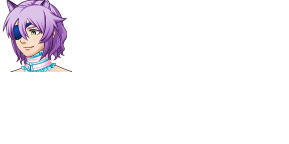

| Bigarren | |
 | |
| Attributes | |
| Name Meaning: | second |
| Unique Ability: | Unknown |
| Location: | Occupied South Ward |
| Role: | Boss (Chapter 7) |
| Affiliation: | Ice Realm (until after Chapter Seven), The Shadow's Faction (Chapter Nine onwards) |
| First Appearance: | Chapter Seven |
| Typing Style: | Normal. |
| Music Theme(s): | "Cats Always Land On Their Feet" (shared with Lehen and Hirugarren) |
| Details | |
| Species: | Game Character (Feline) |
| Gender: | Female(?) |
| Eye Color: | Green/Blue |
| Hair Color: | Purple |
| Status: | Partially Alive |
Bigarren was a commander bitch. She ordered her (admittedly dullheaded) subordinates around with impunity.
In the present, her personality is unknown as she is partially under control of another entity, likely The Shadow.
Lehen, Bigarren, and Hirugarren 'the catsketeers' occupy the South Ward of Urrezko City. After their boss battle, they retreat, only to be killed by Ilargia in seconds.
However, Bigarren managed to survive being apparently killed by Ilargia thanks to Bizkarroi. Afterwards, she presumably was turned into a vessel for The Shadow.
Bigarren is a competent fighter, and is the strongest of the 'catsketeers'.
Lehen and Hirugarren are directly subordinate to Bigarren, and they treat her with an amount of respect.
Lehen, Bigarren, and Hirugarren serve Izoztutako, and venerate her as their queen.
| This page is in the folowing categories: Female Characters, Dead Characters, Game Characters, Feline |